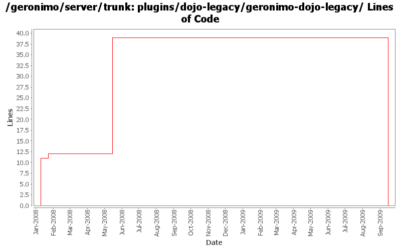

[root]/plugins/dojo-legacy/geronimo-dojo-legacy
 src
(0 files, 0 lines)
src
(0 files, 0 lines)
 main
(0 files, 0 lines)
main
(0 files, 0 lines)
 appended-resources
(0 files, 0 lines)
appended-resources
(0 files, 0 lines)
 META-INF
(0 files, 0 lines)
META-INF
(0 files, 0 lines)
 webapp
(0 files, 0 lines)
webapp
(0 files, 0 lines)
 WEB-INF
(0 files, 0 lines)
WEB-INF
(0 files, 0 lines)
 site
(0 files, 0 lines)
site
(0 files, 0 lines)

| Author | Changes | Lines of Code | Lines per Change |
|---|---|---|---|
| Totals | 10 (100.0%) | 62 (100.0%) | 6.2 |
| jdillon | 2 (20.0%) | 49 (79.0%) | 24.5 |
| ecraig | 3 (30.0%) | 11 (17.7%) | 3.6 |
| kevan | 2 (20.0%) | 2 (3.2%) | 1.0 |
| rwonly | 3 (30.0%) | 0 (0.0%) | 0.0 |
GERONIMO-4790 Migrate debug-views code to base on the up-to-date dojo: Sub-task 1
0 lines of code changed in 3 files:
Upgrade maven-dependency-plugin to 2.0
Replace dojo .tar.gz bits with .zip ones instead, this prevents the build from having to unarchive the .gz into /tmp, which may or may not be on another filesystem, and when its not the same the build crawls. Also the plexus tar.gz bits are buggy and can't handle files with spaces. Also using the names of the release artifacts for clarity.
Removed the need for dojoVersion and dojoLegacyVersion properties
38 lines of code changed in 1 file:
Update LICENSE and NOTICE files. Merge from 2.1 branch
1 lines of code changed in 1 file:
upgrade trunk to 2.2-SNAPSHOT
1 lines of code changed in 1 file:
(GERONIMO-3747) Fixed parentage of module groups, though most still need to have their modules put into the proper groupId
Updated groupId of *everything* under framework/** to org.apache.geronimo.framework, and did my best to update all references
11 lines of code changed in 1 file:
GERONIMO-3300
Upgrade Dojo to 1.0
-Moved dojo 0.4.3 to dojolegacy artifact to prevent issues/conflicts with 1.0.2, as well as allow both to co-exist
-created dojo-legacy plugin for 0.4.3
-changed dependencies for 0.4.3 to use dojo-legacy plugin
-changed dojo plugin to use 1.0.2
-added dojo 1.0.2 to repository
-set dojo 1.0.2 to default context root of /dojo/1.0
-Dojo 0.4.3 still has default context root of /dojo
-added dojo plugin to default jee5 assemblies
11 lines of code changed in 3 files: